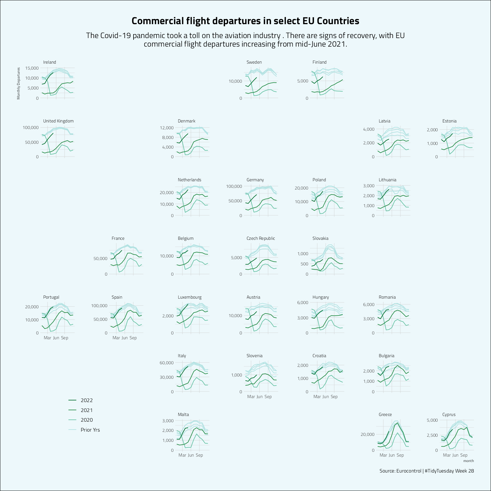

European Flights
Jim Gruman
July 13, 2022
Last updated: 2022-07-13
Checks: 7 0
Knit directory: myTidyTuesday/
This reproducible R Markdown analysis was created with workflowr (version 1.7.0). The Checks tab describes the reproducibility checks that were applied when the results were created. The Past versions tab lists the development history.
Great! Since the R Markdown file has been committed to the Git repository, you know the exact version of the code that produced these results.
Great job! The global environment was empty. Objects defined in the global environment can affect the analysis in your R Markdown file in unknown ways. For reproduciblity it’s best to always run the code in an empty environment.
The command set.seed(20210907) was run prior to running
the code in the R Markdown file. Setting a seed ensures that any results
that rely on randomness, e.g. subsampling or permutations, are
reproducible.
Great job! Recording the operating system, R version, and package versions is critical for reproducibility.
Nice! There were no cached chunks for this analysis, so you can be confident that you successfully produced the results during this run.
Great job! Using relative paths to the files within your workflowr project makes it easier to run your code on other machines.
Great! You are using Git for version control. Tracking code development and connecting the code version to the results is critical for reproducibility.
The results in this page were generated with repository version 0e43049. See the Past versions tab to see a history of the changes made to the R Markdown and HTML files.
Note that you need to be careful to ensure that all relevant files for
the analysis have been committed to Git prior to generating the results
(you can use wflow_publish or
wflow_git_commit). workflowr only checks the R Markdown
file, but you know if there are other scripts or data files that it
depends on. Below is the status of the Git repository when the results
were generated:
Ignored files:
Ignored: .Rhistory
Ignored: .Rproj.user/
Ignored: data/.Rhistory
Ignored: data/CNHI_Excel_Chart.xlsx
Ignored: data/Chicago.rds
Ignored: data/CommunityTreemap.jpeg
Ignored: data/Community_Roles.jpeg
Ignored: data/SeriesReport-20220414171148_6c3b18.xlsx
Ignored: data/Weekly_Chicago_IL_Regular_Reformulated_Retail_Gasoline_Prices.csv
Ignored: data/YammerDigitalDataScienceMembership.xlsx
Ignored: data/YammerMemberPage.rds
Ignored: data/YammerMembers.rds
Ignored: data/df.rds
Ignored: data/grainstocks.rds
Ignored: data/hike_data.rds
Ignored: data/netflixTitles.rds
Ignored: data/netflixTitles2.rds
Ignored: data/raw_weather.RData
Ignored: data/us_states.rds
Ignored: data/us_states_hexgrid.geojson
Ignored: data/weatherstats_toronto_daily.csv
Untracked files:
Untracked: analysis/2022_May_tabular_playground.Rmd
Untracked: analysis/2022_May_tabular_playground_tabnet.Rmd
Untracked: code/YammerReach.R
Untracked: code/autokeras.R
Untracked: code/chicago.R
Untracked: code/glmnet_test.R
Untracked: code/googleCompute.R
Untracked: code/work list batch targets.R
Untracked: environment.yml
Untracked: figure/
Untracked: report.html
Unstaged changes:
Modified: analysis/2021_01_19_tidy_tuesday.Rmd
Modified: analysis/2021_03_24_tidy_tuesday.Rmd
Deleted: analysis/2021_04_20.Rmd
Deleted: analysis/2022_02_11_tabular_playground.Rmd
Deleted: analysis/2022_04_18.qmd
Modified: analysis/Survival.Rmd
Modified: analysis/_site.yml
Modified: code/_common.R
Note that any generated files, e.g. HTML, png, CSS, etc., are not included in this status report because it is ok for generated content to have uncommitted changes.
These are the previous versions of the repository in which changes were
made to the R Markdown
(analysis/2022_07_13_tidy_tuesday.Rmd) and HTML
(docs/2022_07_13_tidy_tuesday.html) files. If you’ve
configured a remote Git repository (see ?wflow_git_remote),
click on the hyperlinks in the table below to view the files as they
were in that past version.
| File | Version | Author | Date | Message |
|---|---|---|---|---|
| Rmd | 0e43049 | opus1993 | 2022-07-13 | add geofacet |
| html | c37dd08 | opus1993 | 2022-07-13 | Build site. |
| Rmd | dd63c3c | opus1993 | 2022-07-13 | give credit to brendialj |
| html | 1e824f6 | opus1993 | 2022-07-13 | Build site. |
| Rmd | cba7dfc | opus1993 | 2022-07-13 | wflow_publish("analysis/2022_07_13_tidy_tuesday.Rmd") |
In this weeks #TidyTuesday we take a look at the number of flights arriving and departing from several large European airports.
data is via Eurocontrol at https://ec.europa.eu/eurostat/web/products-eurostat-news/-/ddn-20210914-1
suppressPackageStartupMessages({
library(tidyverse)
library(lubridate)
library(patchwork)
library(geofacet)
})
source(here::here("code","_common.R"),
verbose = FALSE,
local = knitr::knit_global())
ggplot2::theme_set(grumanlib::theme_jim(base_size = 12))Let’s see what we can do to improve BrendiA’s heatmap:
tweetrmd::include_tweet("https://twitter.com/brendialj/status/1547206511910600706")For this week's #TidyTuesday, I examined the total commercial flight departures across the EU. The recent months show signs of recovery for the aviation industry after the pandemic hit.#RStats code: https://t.co/2sIpKRS1Ur#dataviz #ggplot2 pic.twitter.com/LJO5m4el58
— Brendi Ang (@brendialj) July 13, 2022
tt <- tidytuesdayR::tt_load("2022-07-12")
Downloading file 1 of 1: `flights.csv`flights <- tt$flights |>
rename(airport_label = `Pivot Label`) |>
janitor::clean_names() |>
select(-year, -month_num, -month_mon)
total_flights <- flights |>
group_by(flt_date) |>
summarise(
total_dep = sum(flt_dep_1, na.rm = TRUE),
.groups = "drop"
) |>
complete(flt_date = seq.Date(
from = as_date("2022-01-01"),
to = as_date("2022-12-31"),
by = "day",
fill = list(value = NA)
)) |>
mutate(
year = year(flt_date),
week_of_year = week(flt_date),
month = month(flt_date, label = TRUE, abbr = TRUE),
day = day(flt_date)
)# Function prepares data for plotting based on a given year by BrendiA at https://github.com/BrendiA/tidy-tuesday/blob/main/2022/week-28/week-28.R
create_df <- function(given_year) {
# Extract first day of the week for the year
first_day_of_year <-
wday(as_date(paste(given_year, "01", "01", sep = "-")),
week_start = 1
)
total_flights |>
filter(year == given_year) |>
mutate(day_of_week = wday(flt_date,
label = TRUE,
week_start = first_day_of_year
)) |>
# mutate(day_of_week = forcats::fct_rev(day_of_week)) |>
group_by(month) |>
mutate(week_of_month = -1 * dense_rank(week_of_year)) |>
ungroup()
}
best_contrast <- function(x, y = c("#010101", "#FFFFFF")) {
contrasts <- prismatic::contrast_ratio(x, y)
y[max(contrasts) == contrasts][1]
}
# Function plots heatmap based on the data generated by BrendiA at https://github.com/BrendiA/tidy-tuesday/blob/main/2022/week-28/week-28.R with Emil Hvitfeldt's Prismatic text color adjustments
plot_heatmap <- function(df) {
# Year list of the data frame
given_year <- unique(df$year)
ggplot(
data = df,
aes(
y = week_of_month,
x = day_of_week,
fill = total_dep
)
) +
# Heat map
geom_tile() +
# Calendar days
geom_text(aes(
label = day,
color = ggplot2::after_scale(purrr::map_chr(fill, best_contrast))
),
size = 2
) +
colorspace::scale_fill_continuous_sequential(
name = "Number of departures",
palette = "Viridis",
na.value = "grey60", # Fill missing dates
limits = c(0, 30000),
breaks = seq(0, 30000, 10000),
oob = scales::squish,
label = scales::label_comma(accuracy = 1),
c2 = 60, # increase
l1 = 10
) + # decrease
facet_wrap(~month,
nrow = 1
) +
theme_minimal() +
labs(title = given_year) +
theme(
axis.text.x = element_blank(),
axis.text.y = element_blank(),
axis.title = element_blank(),
legend.direction = "horizontal",
legend.key.width = unit(1.5, "cm"),
legend.text = element_text(family = "Regular 400"),
legend.title = element_text(vjust = 0.8, family = "Regular 400"),
panel.spacing.x = unit(0, "lines"),
panel.grid = element_blank(),
plot.title = element_text(hjust = 0.5, family = "Black 900 Italic", size = 12, face = "bold"),
strip.text = element_text(family = "Regular 400", size = 8)
)
}plot_list <-
purrr::map(
unique(sort(total_flights$year)),
~ create_df(.x) |>
plot_heatmap()
)The functions above create a big list of heat maps, one for each year. I’ve added prismatic contrasts to the geom_text to make the dates just a bit more legible.
# Subtitle
sub <-
str_wrap(
"The Covid-19 pandemic took a toll on the aviation industry .
There are signs of recovery, with EU commercial flight departures increasing from mid-June 2021.
Will the rest of 2022 see departures close to pre-pandemic levels?",
width = 90
)
plot_list[[3]] +
plot_list[[4]] +
plot_list[[5]] +
plot_list[[6]] +
plot_list[[7]] +
plot_layout(
guides = "collect",
ncol = 1,
height = 0.5
) &
plot_annotation(
title = "Commercial flight departures in the EU",
subtitle = sub,
caption = "Source: Eurocontrol | #TidyTuesday Week 28 | @brendialj with the heatmap concept",
theme = theme(
legend.position = "bottom",
plot.title = element_text(hjust = 0.5, size = 18, face = "bold"),
plot.subtitle = element_text(hjust = 0.5, size = 14),
plot.background = element_rect(fill = "#f0f8ff"),
plot.caption = element_text(vjust = 1)
)
)
Cameron Kay posted a noteworthy animation. I’ll skip it this time go another direction.
tweetrmd::include_tweet("https://twitter.com/cameronskay/status/1547291272183832577")My first #TidyTuesday contribution (now with legible text and more Norway!) #ICPSR #sumprog22 pic.twitter.com/efky0OQfLD
— Cameron Kay (@cameronskay) July 13, 2022
flights |>
group_by(year = year(flt_date), month = month(flt_date), state_name) |>
summarise(
total_dep = sum(flt_dep_1, na.rm = TRUE),
.groups = "drop"
) |>
mutate(color = case_when(
year < 2020 ~ "#b2e2e2",
year == 2020 ~ "#66c2a4",
year == 2021 ~ "#238b45",
year == 2022 ~ "#006d2c"
)) |>
ggplot(aes(
x = month,
total_dep
)) +
geom_line(aes(
group = factor(year),
color = color
),
show.legend = TRUE
) +
scale_color_identity(
guide = "legend",
labels = c("2022", "2021", "2020", "Prior Yrs")
) +
scale_x_continuous(
breaks = c(3, 6, 9),
labels = c("Mar", "Jun", "Sep"),
minor_breaks = NULL
) +
scale_y_continuous(
limits = c(0, NA),
n.breaks = 3,
labels = scales::comma
) +
facet_geo(~state_name,
grid = "eu_grid1",
label = "name",
scales = "free_y"
) +
labs(
y = "Monthly Departures",
title = "Commercial flight departures in select EU Countries",
subtitle = sub,
color = NULL,
caption = "Source: Eurocontrol | #TidyTuesday Week 28"
) +
theme(
legend.position = c(0.1, 0.1),
plot.title = element_text(hjust = 0.5, size = 18, face = "bold"),
plot.subtitle = element_text(hjust = 0.5, size = 14),
plot.background = element_rect(fill = "#edf8fb"),
plot.caption = element_text(vjust = 1)
)
sessionInfo()R version 4.1.3 (2022-03-10)
Platform: x86_64-w64-mingw32/x64 (64-bit)
Running under: Windows 10 x64 (build 22000)
Matrix products: default
locale:
[1] LC_COLLATE=English_United States.1252
[2] LC_CTYPE=English_United States.1252
[3] LC_MONETARY=English_United States.1252
[4] LC_NUMERIC=C
[5] LC_TIME=English_United States.1252
attached base packages:
[1] stats graphics grDevices utils datasets methods base
other attached packages:
[1] geofacet_0.2.0 patchwork_1.1.1 lubridate_1.8.0 forcats_0.5.1
[5] stringr_1.4.0 dplyr_1.0.9 purrr_0.3.4 readr_2.1.2
[9] tidyr_1.2.0 tibble_3.1.7 ggplot2_3.3.6 tidyverse_1.3.1
[13] workflowr_1.7.0
loaded via a namespace (and not attached):
[1] readxl_1.4.0 backports_1.4.1 systemfonts_1.0.4
[4] workflows_1.0.0 selectr_0.4-2 tidytuesdayR_1.0.2
[7] sp_1.5-0 splines_4.1.3 listenv_0.8.0
[10] usethis_2.1.6 digest_0.6.29 foreach_1.5.2
[13] htmltools_0.5.2 yardstick_1.0.0 viridis_0.6.2
[16] parsnip_1.0.0 fansi_1.0.3 magrittr_2.0.3
[19] memoise_2.0.1 tune_1.0.0 tzdb_0.3.0
[22] recipes_1.0.1 globals_0.15.1 modelr_0.1.8
[25] gower_1.0.0 vroom_1.5.7 R.utils_2.12.0
[28] hardhat_1.2.0 rsample_1.0.0 jpeg_0.1-9
[31] dials_1.0.0 colorspace_2.0-3 rvest_1.0.2
[34] ggrepel_0.9.1 textshaping_0.3.6 haven_2.5.0
[37] xfun_0.31 prismatic_1.1.0 callr_3.7.0
[40] crayon_1.5.1 jsonlite_1.8.0 survival_3.3-1
[43] iterators_1.0.14 glue_1.6.2 gtable_0.3.0
[46] ipred_0.9-13 R.cache_0.15.0 tweetrmd_0.0.9
[49] future.apply_1.9.0 imguR_1.0.3 scales_1.2.0
[52] infer_1.0.2 DBI_1.1.3 Rcpp_1.0.9
[55] viridisLite_0.4.0 units_0.8-0 bit_4.0.4
[58] GPfit_1.0-8 proxy_0.4-27 lava_1.6.10
[61] prodlim_2019.11.13 geogrid_0.1.1 httr_1.4.3
[64] ellipsis_0.3.2 farver_2.1.1 R.methodsS3_1.8.2
[67] pkgconfig_2.0.3 nnet_7.3-17 sass_0.4.1
[70] dbplyr_2.2.1 janitor_2.1.0 utf8_1.2.2
[73] here_1.0.1 labeling_0.4.2 tidyselect_1.1.2
[76] rlang_1.0.3 DiceDesign_1.9 later_1.3.0
[79] munsell_0.5.0 cellranger_1.1.0 tools_4.1.3
[82] cachem_1.0.6 cli_3.3.0 generics_0.1.3
[85] broom_1.0.0 evaluate_0.15 fastmap_1.1.0
[88] yaml_2.3.5 ragg_1.2.2 rematch2_2.1.2
[91] bit64_4.0.5 processx_3.7.0 knitr_1.39
[94] fs_1.5.2 workflowsets_0.2.1 future_1.26.1
[97] whisker_0.4 R.oo_1.25.0 xml2_1.3.3
[100] compiler_4.1.3 rstudioapi_0.13 curl_4.3.2
[103] png_0.1-7 e1071_1.7-11 reprex_2.0.1
[106] lhs_1.1.5 bslib_0.3.1 stringi_1.7.8
[109] highr_0.9 ps_1.7.1 rgeos_0.5-9
[112] lattice_0.20-45 Matrix_1.4-0 styler_1.7.0
[115] classInt_0.4-7 conflicted_1.1.0 vctrs_0.4.1
[118] tidymodels_0.2.0 pillar_1.7.0 lifecycle_1.0.1
[121] furrr_0.3.0 jquerylib_0.1.4 httpuv_1.6.5
[124] R6_2.5.1 promises_1.2.0.1 KernSmooth_2.23-20
[127] gridExtra_2.3 parallelly_1.32.0 codetools_0.2-18
[130] MASS_7.3-55 assertthat_0.2.1 rprojroot_2.0.3
[133] withr_2.5.0 rnaturalearth_0.1.0 parallel_4.1.3
[136] hms_1.1.1 grid_4.1.3 rpart_4.1.16
[139] timeDate_3043.102 class_7.3-20 snakecase_0.11.0
[142] rmarkdown_2.14 grumanlib_0.1.0.9999 git2r_0.30.1
[145] sf_1.0-7 getPass_0.2-2